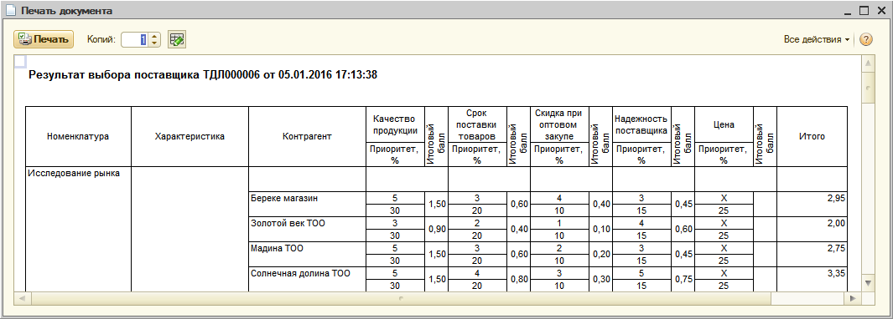

Документ "Результат выбора поставщика" создается на основании проведенного документа "Лот".
На закладке "Позиции" указываются те позиции, по которым производилась оценка поставщиков. Колонка "По умолчанию" указывает, что выбранный поставщик является основным поставщиком для данной номенклатуры.
Колонка "Итоговый балл" заполняется рассчитанным значением в соответствии настроенной схемой расчета и указанными критериями.
Для просмотра расчета итогового балла можно вывести печатную форму по кнопке "Анализ подбора поставщика".

Расчет итогового балла производится по формуле:
ИтоговыйБалл = ОценкаКритерия1*ПриоритетКритерия1 + ОценкаКритерия2*ПриоритетКритерия2 + … + Оценка КритерияN* *ПриоритетКритерия N
По результатам выбора поставщиков создаются заказы поставщикам по команде "Сформировать заказы". На закладке "Заказы" можно увидеть сформированные и проведенные документы "Заказ поставщику".